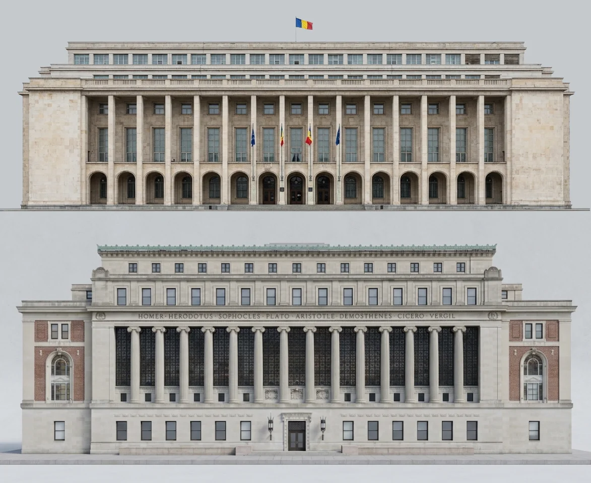

Clădiri surori
De la New York la București: Paralele arhitecturale neașteptate între Butler Library, Columbia University, New York și Palatul Victoria, București

Când am văzut pentru prima dată fațada Bibliotecii Butler din New York, aceasta mi-a amintit de Palatul Victoria din București. Asemănarea mi s-a părut și mai puternică în cadrele nocturne, atunci când lumina scoate în evidență șirul de coloane și lasă restul fațadei în plan secund. Am vrut să văd ce rămâne din această impresie inițială dacă pun cele două construcții una sub alta, într-un exercițiu de comparare vizuală directă.
Privite din față, ambele clădiri împărtășesc o compoziție monumentală similară: un front lung, un șir regulat de elemente verticale, capete laterale mai pline și etaje superioare retrase. Detaliile le deosebesc însă repede. La București, stâlpii drepți se întâlnesc cu arcadele de la parter, pe când la New York, coloanele ionice poartă o friză impunătoare cu nume de autori antici, de la Homer și Herodot până la Cicero și Vergiliu.
Această similitudine de ritm și proporții devine și mai interesantă prin prisma arhitecților care le-au conceput. Palatul Victoria a fost proiectat de Duiliu Marcu și finalizat în 1952, fiind o lucrare reprezentativă pentru viziunea sa de a combina clasicismul simplificat cu linii moderne, dinamică pe care a perfecționat-o în perioada interbelică. De cealaltă parte, Butler Library a fost proiectată de James Gamble Rogers și deschisă în 1934 sub numele de South Hall. Rogers era un maestru al arhitecturii academice americane, cunoscut pentru capacitatea de a reinterpreta stilurile istorice — de la neogotic la neoclasicism — la o scară monumentală potrivită marilor instituții universitare.
Fără a putea confirma o influență directă între cei doi arhitecți, este cert că amândoi au rezonat cu spiritul epocii lor, căutând o arhitectură a autorității, stabilității și ordinii geometrice. Pentru a aduce această paralelă mai aproape de realitate, am aliniat ambele fațade astfel încât să fie privite frontal și să ocupe aproape aceeași lățime în cadru. Am folosit Gemini pentru a izola imobilele din fotografii, eliminând vegetația, vehiculele și trecătorii.
Montajul final l-am realizat în Photopea, unde am reconstruit ferestrele de la ultimele două etaje ale Palatului Victoria. În imaginile mai vechi din Street View se zăresc încă ferestrele din colțurile superioare, dispărute în fotografiile mai recente. În această compoziție am ales să redau fațada Palatului Victoria exact așa cum arăta înainte de modificările din 2011, păstrând simetria și intenția tehnică inițială a proiectului.